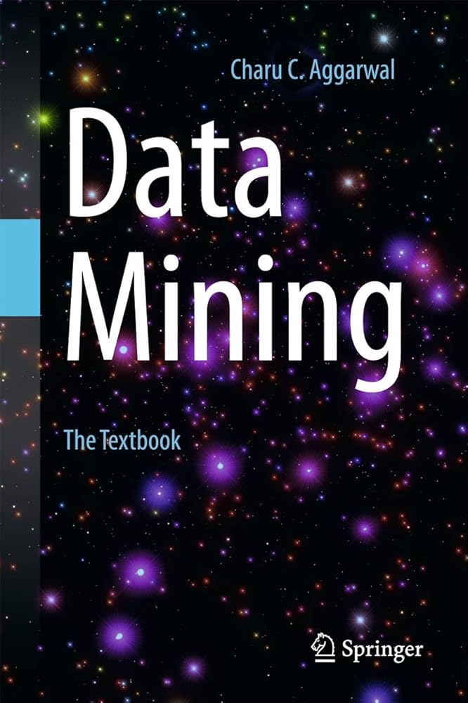

Bibliografia
Abaixo, você encontra a bibliografia básica e complementar da disciplina.
Básica
| Título | |
|---|---|
| PANG-NING, Tan; STEINBACH, Michael, KARPATNE, Anuj; KUMAR, Vipin. Introduction to data mining. 2. ed. New York: Pearson, 2019. | |
| Han, J.; Pei, J.; Tong, H. Data Mining: Concepts and Techniques. Morgan Kaufmann Publishers, 2023. | |
| NWANGANGA, Fred; CHAPPLE, Mike. Practical Machine Learning in R. Indianapolis, Indiana: John Wiley & Sons, 2020. | |
|  | AGGARWAL, Charu C. et al. Data mining: the textbook. New York: springer, 2015. |
| HASTIE, T.; TIBSHIRANI, R; FRIEDMAN, J. The Elements of Statistical Learning: Data Mining, Inference and Prediction. 2. ed. New York, NY: Springer, 2009. | |
| DUNHAM, Margaret H. Data Mining: Introductory and Advanced Topics. Pearson, 2020. |
Nenhum item correspondente
Complementar
| Título | |
|---|---|
| CASTRO, Leandro N.; FERRARI, Daniel G. Introdução à mineração de dados: conceitos básicos, algoritmos e aplicações. São Paulo : Saraiva, 2016. | |

|
BRAMER, Max. Principles of Data Mining. 4. ed. Springer, 2020. |

|
LAROSE, Daniel T.; LAROSE, Chantal D. . Discovering knowledge in data: an introduction to data mining. 2. ed. John Wiley & Sons, 2014. |
Nenhum item correspondente